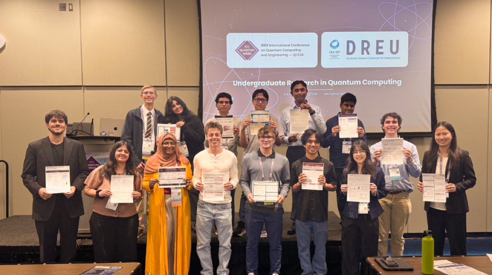
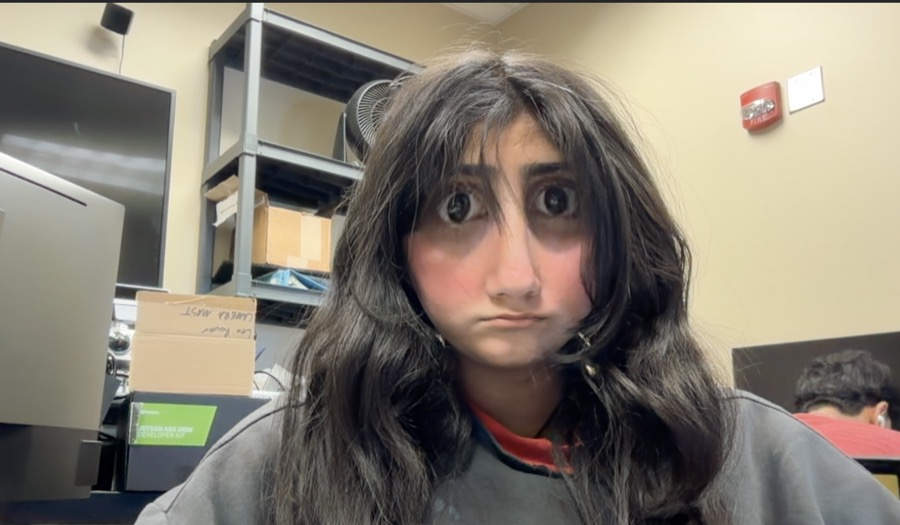
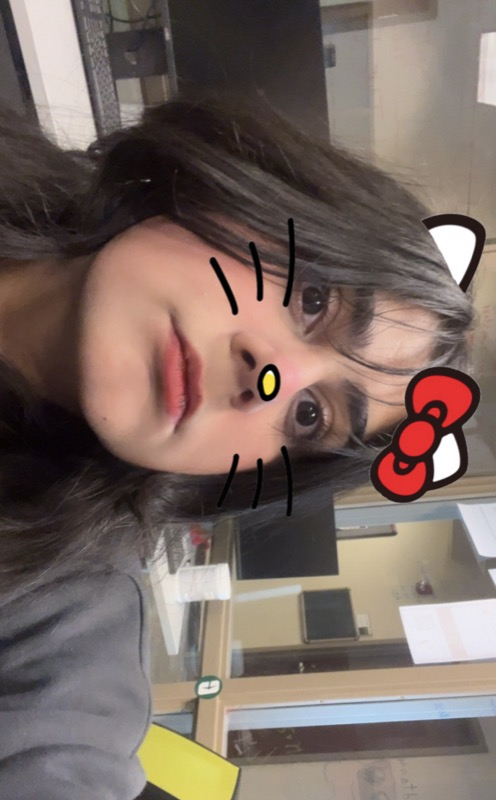
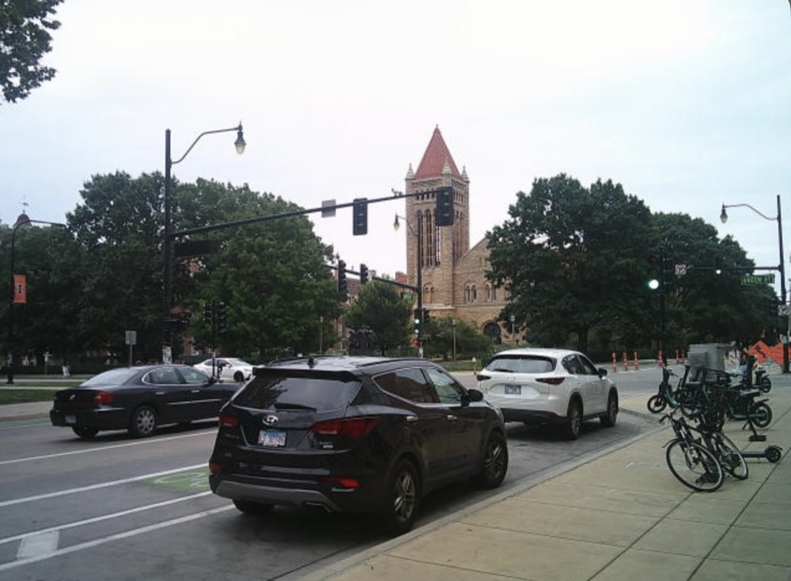
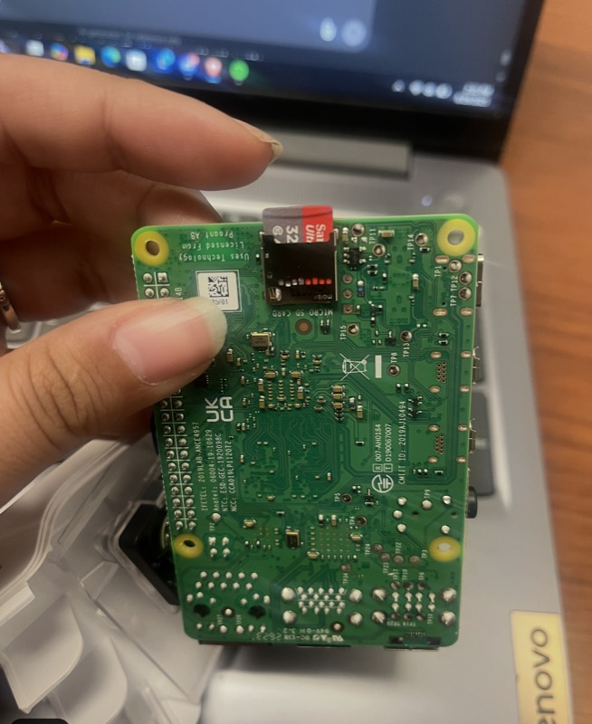
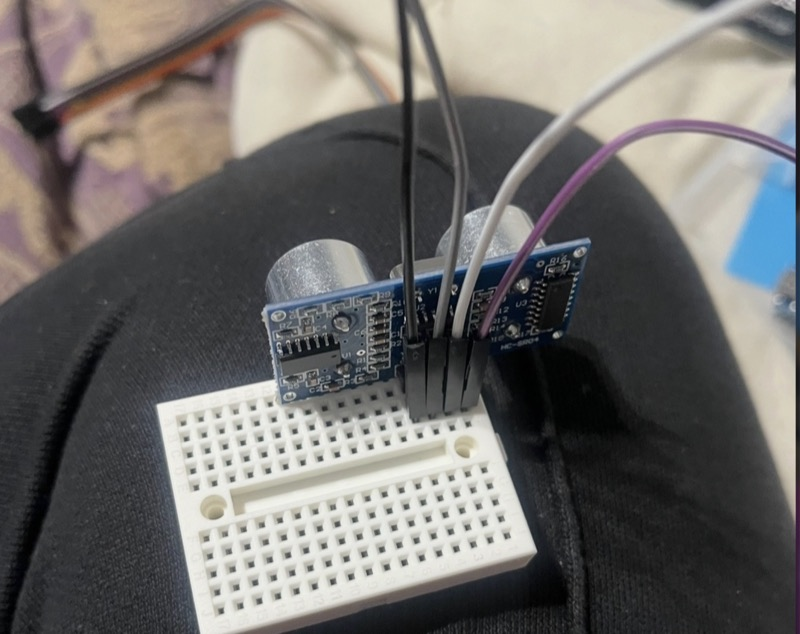

about_me.txt - Notepad
Simran (Summer) Malik
I study quantum algorithms, spatial computing, computing systems, research experiments, and the chaotic process of making hard ideas understandable.
- student researcher @ UNC Charlotte
- founder + QML division lead @ CAIR
- AWS Student Builder Campus Leader
github / linkedin / publications
summer is here to compute !!Ln 1, Col 1
news!!.html - Summer Explorer
Addresssummer://news/2026
new
paper!!
IEEE Quantum Week 2026 / QML
Beyond Accuracy: Behavioral Stability and Compression Effects in Hybrid Quantum-Classical Learning
My independent research: a published 2-page paper + poster presentation.
read about it →

we made the news!!
CRA featured our DREU-QIS crew at IEEE Quantum Week in Toronto.
read the CRA story →
C:\SUMMER> apollors run
[ok] preserve Apollo 11 source
[ok] execute real AGC words
[ok] record machine trace
[ok] compare vs yaAGC
> Apollo 11 guidance software, in Rust.
open /apollors/



4 object(s)summer at UIUC
Quantum factoring: Shor & Regev
DREU @ UIUC, summer 2026. The QFT, reversible modular arithmetic, lattice post-processing, and noisy circuits.
Open folder
C:\summer\spatial_computing
Spatial computing
UNC Charlotte research with an Apple Vision Pro: how point clouds, meshes, and graphs change what BFS, Dijkstra, and A* decide.
Open folder
C:\summer\qml_outreach
QML outreach @ CAIR
I founded CAIR's quantum machine learning division. Our main project, QML Torch, makes a quantum layer feel like a normal PyTorch layer.
Open folder
C:\summer\jackson_lab
The Jackson Laboratory
Cancer Genomics Research Summer Institute, 2025: sequencing data, variant pathogenicity, and clinical tiers with OncoKB, COSMIC, and CIViC.
Open folder
C:\summer\presentations


3D printing, Raspberry Pis, sensors on breadboards. more on GitHub
factorization
but explain it
then test it
then explain it again
Simran (Summer) Malik
I study quantum algorithms, spatial computing, computing systems, research experiments, and the chaotic process of making hard ideas understandable.
Publications
Beyond Accuracy: Behavioral Stability and Compression Effects in Hybrid Quantum-Classical Learning — IEEE Quantum Week 2026.
In the news
CRA features our DREU-QIS cohort at IEEE Quantum Week — Computing Research News, October 2026.
Research & projects
Hackathon wins
- DuQuantum 2026, Duke University: 1st Place Overall, 1st Place Alice & Bob track, Best Use of ElevenLabs. Cat qubit readout (repo + report)
- CO-LAB Pitch Competition 2026, UNC Charlotte Center City: 1st Place / Grand Prize ($2,500). AgriZone (repo)
- Method x Havk Hackathon: 3rd Place. Pacifica (repo)
- HackUNCP 2026, UNC Pembroke: Best Use of Solana (MLH). Coroner (Devpost)
- AstroHack 2025: 3rd Place out of 142, built solo in 36 hours. BioForge (Devpost)
- CAIR Hackathon, April 2025: 1st Place. SYN (Devpost)
- Hack CLT Fall 2024, UNC Charlotte: Most Technical. BinBuddy (repo)
Elsewhere